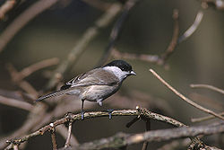
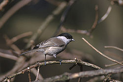

| Willow Tit | |
|---|---|
|  | |
| Conservation status | |
| Binomial name | |
| Poecile montanus (Conrad von Baldenstein, 1827) |
|
| Synonyms | |
|
Parus montanus |
| Willow Tit | |
|---|---|
|  | |
| Conservation status | |
| Binomial name | |
| Poecile montanus (Conrad von Baldenstein, 1827) |
|
| Synonyms | |
|
Parus montanus |
The Willow Tit (Poecile montanus) is a passerine bird in the tit family Paridae. It is a widespread and common resident breeder throughout temperate and subarctic Europe and northern Asia. It is more of a conifer specialist than the closely related Marsh Tit, which explains it breeding much further north. It is resident, and most birds do not migrate.
In the east of its range it is much paler than Marsh Tit, but as one goes west the various races become increasingly similar, so much so that it was not recognised as a breeding bird in Great Britain until the end of the 19th century, despite being widespread.
The Willow Tit is distinguished from the Marsh Tit by a sooty brown instead of a glossy blue black cap; the general colour is otherwise similar, though the under parts are more buff and the flanks distinctly more rufous; the pale buff edgings to the secondaries form a light patch on the closed wing. The feathers of the crown and the black bib under the bill are longer, but this is not an easily noticed character. However, the more graduated tail (not square) shows distinctly when spread. Length is 11.5 cm, and wings range from 60–70 mm.
The commonest call is a nasal zee, zee, zee, but the notes of the bird evidently vary considerably. Occasionally a double note, ipsee, ipsee, is repeated four or five times.
The Willow Tit often excavates its own nesting hole, even piercing hard bark; this is usually in a rotten stump or in a tree, more or less decayed. Most nests examined are cups of felted material, such as fur, hair and wood chips, but feathers are sometimes used. The number of eggs varies from six to nine, with reddish spots or blotches.
Birds feed on insects, caterpillars, and seeds, much like other tits. This species is parasitised by the moorhen flea, Dasypsyllus gallinulae.[1]

.jpg){kind=link}